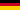

Besucherbergwerk Bauersberg
Useful Information
| Location: |
Parkplatz Rothsee, 97653 Bischofsheim in der Rhön.
(50.4240183, 10.0219006) |
| Open: |
Easter to OCT no restrictions. [2026] |
| Fee: |
free. [2026] |
| Classification: |
 Lignite Mine Lignite Mine
 Rock Mine
Replica Underground Mine Rock Mine
Replica Underground Mine
|
| Light: |
 Electric Light Electric Light
|
| Dimension: | L=60 m. |
| Guided tours: | self guided. |
| Photography: | allowed |
| Accessibility: | yes |
| Bibliography: |
Anon ():
Rhöner Geologie Erleben,
Naturpark & Biosphärenreservat Bayerische Rhön e.V.
pdf
 |
| Address: | Naturpark & Biosphärenreservat Bayerische Rhön e.V. Biosphärenzentrum Rhön, "Haus der Langen Rhön", Unterelsbacher Str. 4, 97656 Oberelsbach, TeL: +49-9774-9102-60. info@nbr-rhoen.de |
| As far as we know this information was accurate when it was published (see years in brackets), but may have changed since then. Please check rates and details directly with the companies in question if you need more recent info. |
|
History
| 1521 | First documented mention of lignite mining at Bauersberg. |
Geology
The bedrock of the Rhön consists of Variscan-folded rocks that are more than 350 million years old. The mountains were eroded, and deep underground the rocks underwent metamorphism due to high pressure and temperature. As the sea advanced into the region, sediments were deposited, whilst in isolated basins evaporation led to the deposition of evaporites. The result is potash mining, salt mining and a multitude of mineral springs. Overlying these are Mesozoic sediments, sandstones and shell limestone. By the start of the Tertiary period, however, the sea had receded, leaving behind a gently undulating plain with numerous lakes; bogs formed, which later became lignite. Plate tectonics led to a divergent fault in the Middle Tertiary, between the Oligocene and Miocene, i.e. 50–31 million years ago. The result was volcanism, predominantly ash eruptions, which led to a metre-thick deposit on the surface. However, the basalt with its characteristic columns formed underground; it never reached the surface but solidified slowly in over 500 vents. Erosion later exposed both parts of the basalt and the lignite.
Description
Besucherbergwerk Bauersberg (Bauersberg Visitor Mine) is not actually the name of this mine, and it isn’t a ‘proper’ visitor mine either. But let’s start with the reason for its existence: this is the Bauersberg, where basalt is still quarried today. In addition to basalt, lignite was also mined here and in the surrounding area. At the tourist destination of Rothsee lake, there is a car park of the same name, where the Naturpfad Bauersberg (Bauersberg Nature Trail) has been established by the nature park. And along this 9 km long Rundweg 4 (Circular Trail 4), signposted with a white 4 on a blue background, there are 10 information boards on the topic of “Rhöner Geologie erleben” (Experiencing Rhön Geology). The lignite tunnel is a stop along this route. Its most distinctive feature: it is freely accessible around the clock; there are no opening hours, but also no guided tours. However, there is electric lighting which you have to switch on yourself, and which switches off again after a while. The tunnel is closed only during the winter months to protect the bats.
And so arose the confusing variety of names, which makes it very difficult even to determine "what" it is. It is referred to as a show mine, show tunnel, visitor mine, visitor show tunnel and lignite tunnel. We have chosen the place name Bauersberg as its proper name, but the names Visitor Mine at Rothsee, Lignite Tunnel Einigkeit 1844, Bischofsheim Visitor Mine and Moritz Visitor Mine are also used. All this confusion over the name is probably due to the fact that this tunnel is actually a replica; the original ‘Einigkeit 1844’ tunnel fell victim to an extension of the neighbouring basalt quarry. It was, so to speak, relocated, many elements, such as the timbering and, of course, the shape, were taken from the original. Unless you know better, you wouldn’t realise it’s a replica.
 Search DuckDuckGo for "Besucherbergwerk Bauersberg"
Search DuckDuckGo for "Besucherbergwerk Bauersberg" Google Earth Placemark
Google Earth Placemark OpenStreetMap
OpenStreetMap Naturpfad Bauersberg, official website (visited: 15-APR-2026)
Naturpfad Bauersberg, official website (visited: 15-APR-2026) Index
Index Topics
Topics Hierarchical
Hierarchical Countries
Countries Maps
Maps